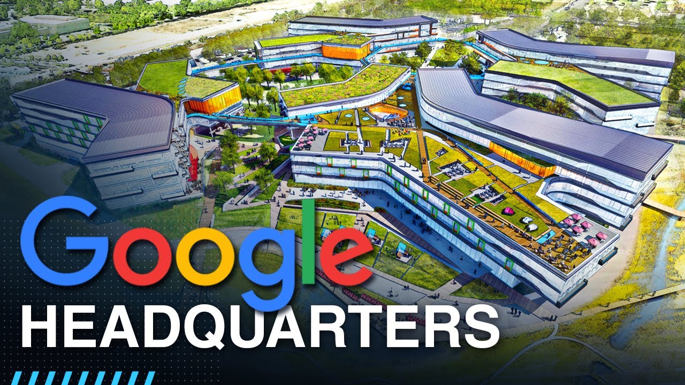
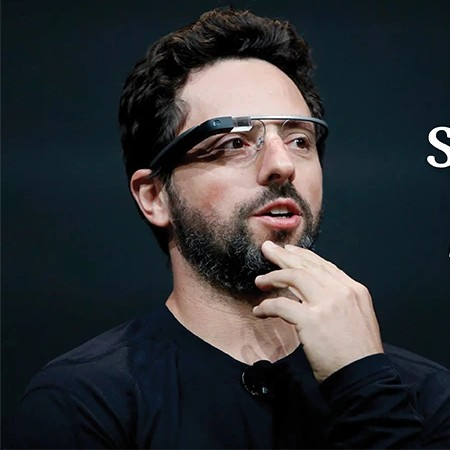
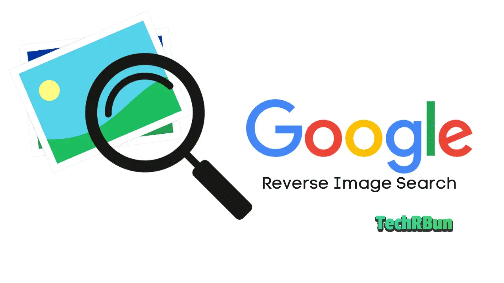
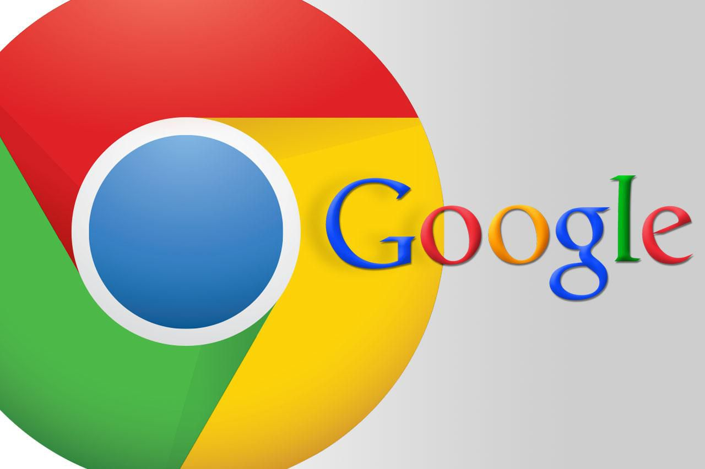
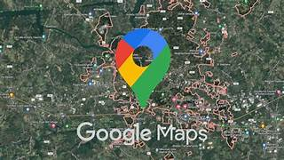
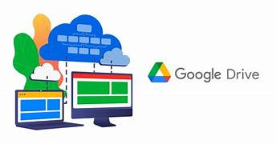
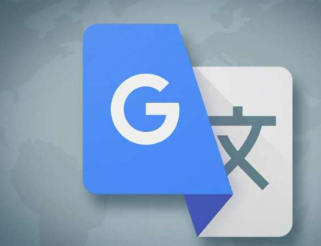

Google is a multinational technology company that mainly focuses on internet-related services and products. It was founded in 1998 by Larry Page and Sergey Brin. Google is best known for its search engine called Google Search, which helps users find information on the internet quickly. The company develops many digital services such as Gmail, Google Maps, and YouTube. Google also created the mobile operating system Android used in many smartphones. The company works in areas like cloud computing, artificial intelligence, and online advertising. Google operates under its parent company Alphabet Inc.. Its main goal is to organize the world’s information and make it universally accessible and useful to everyone.
Google develops many advanced technologies to improve internet services and digital communication. One important technology is its search algorithm called PageRank, which helps rank web pages based on relevance and importance. Google also works heavily in Artificial Intelligence and Machine Learning to improve search results, voice assistants, and recommendations. The company provides cloud services through Google Cloud, which allows businesses to store data and run applications online. Google developed the open-source mobile operating system Android used by billions of smartphones worldwide. It also created the web browser Google Chrome to provide fast and secure internet browsing. Google uses large-scale data centers and distributed computing technologies to process huge amounts of information quickly. These technologies help Google deliver reliable services such as Google Search, maps, translation, and video streaming to users around the world.

The main headquarters of Google is called Googleplex. It is located in Mountain View, California in the United States. The Googleplex serves as the central office where many of Google’s major operations and management activities take place. The campus contains multiple office buildings, research labs, and spaces where engineers develop new technologies and services.
Many important projects related to Google Search, Google Chrome, and Android are developed and managed from this headquarters. The Googleplex is known for its modern design, employee-friendly environment, and innovative work culture. It includes facilities such as cafes, recreation areas, meeting spaces, and technology labs.
Thousands of employees, including engineers, researchers, and managers, work at the Google headquarters to develop and maintain Google products and services used worldwide.
The founders of Google are Larry Page and Sergey Brin. They met while studying at Stanford University in the United States. In 1998, they created Google as a research project to improve internet search technology. They developed the search ranking system called PageRank to organize web pages more efficiently. Their invention later became one of the most widely used search engines in the world.
Sundar Pichai is the Chief Executive Officer (CEO) of Google and its parent company Alphabet Inc.. He was born on June 10, 1972 in Madurai, Tamil Nadu, India. Sundar Pichai studied engineering at Indian Institute of Technology Kharagpur and later continued his studies at Stanford University and University of Pennsylvania.
m
He joined Google in 2004 and worked on important products such as Google Chrome, Google Drive, and Android. Because of his leadership and success in managing these technologies, he became the CEO of Google in 2015. Later, in 2019, he also became the CEO of Alphabet Inc.
Regarding personality type, some analysts speculate that Sundar Pichai might be close to INTJ or INFJ based on his calm leadership and strategic thinking. However, like Larry Page, his MBTI personality type has not been officially confirmed.

Sergey Brin (born August 21, 1973) is a Russian-born American computer scientist, entrepreneur, and philanthropist best known as the cofounder of Google and its parent company Alphabet Inc.. His pioneering work on web search helped transform how people access information globally, making Google one of the world’s most influential technology companies.
Larry Page, the co-founder of Google, is not officially confirmed to be an INFP personality type. The INFP type comes from the Myers–Briggs Type Indicator, which classifies personalities based on preferences like introversion, intuition, feeling, and perceiving.
Google is a global technology company best known for its internet search engine, Google Search. It also develops popular products like Gmail, Google Chrome, Android, and YouTube. Google’s mission is to organize the world’s information and make it universally accessible and useful.

Google Search is the world’s most popular internet search engine, launched by Google in 1997–1998. It helps users quickly find relevant websites, images, videos, news, and other online information. Google Search uses advanced algorithms, including PageRank, to rank results based on relevance and quality..

Google Chrome is a fast and secure web browser developed by Google, first released in 2008. It allows users to browse websites, run web applications, and access Google services seamlessly. Chrome is known for its simple interface, speed, security features, and support for extensions and cross-platform use.
Google Maps is a web-based mapping and navigation service developed by Google. It provides directions for driving, walking, cycling, and public transportation, along with real-time traffic updates. Google Maps also shows nearby places, satellite imagery, street views, and helps users explore locations worldwide.


Google Drive is a cloud storage service developed by Google that allows users to store, access, and share files online. It supports documents, spreadsheets, presentations, photos, and videos, with real-time collaboration features. Google Drive integrates with other Google services like Google Docs, making teamwork and file management easy and efficient.
Google Translate is a language translation service developed by Google that can translate text, speech, images, and web pages between multiple languages. It uses advanced machine learning and artificial intelligence to provide accurate and context-aware translations. Google Translate helps users communicate across language barriers and is widely used globally for travel, education, and business.
